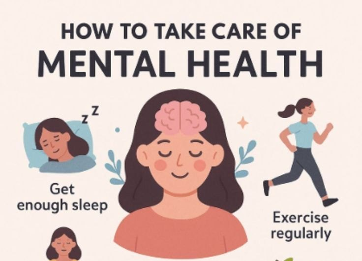
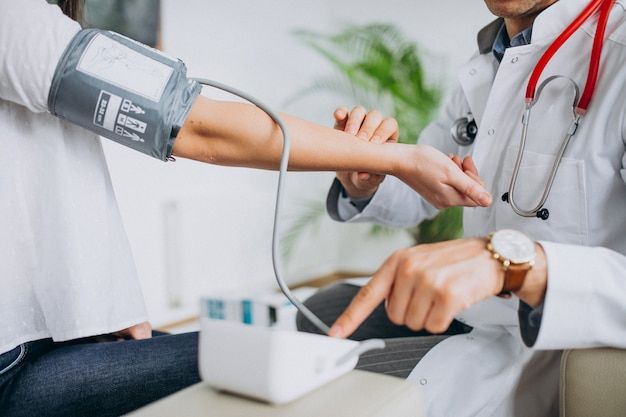

Compassionate care, close to home.
At E & M Medical Services, we combine clinical excellence with a deeply personal approach — because your health deserves attention, not just appointments.
Compassion
Every patient is met with warmth, patience, and a willingness to listen.
Care
Evidence-based medicine delivered with the attention your health deserves.
Commitment
A long-term partnership in your wellness — through every stage of life.
Two decades of trusted community care.
Since 2005, E & M Medical Services has been a steady presence for families across Starke and the surrounding communities. What started as a commitment to accessible, patient-centered medicine has grown into a practice known for its thoughtful diagnoses, careful follow-up, and the kind of relationships that only come from truly knowing your patients.
Whether you're here for a routine checkup, managing a chronic condition, or simply looking for a doctor who takes the time to listen — you're in the right place.
Learn About Our PracticeComprehensive care under one roof
From wellness visits to ongoing disease management, we provide the full range of primary care services your family needs.
Primary Medical Care
Your first point of contact for all health concerns — comprehensive, continuous, and personal.
Alternative Medicine
Holistic healthcare approaches that support the body's natural healing process and promote long-term vitality.
Telemedicine
Virtual healthcare consultations and follow-up care from the comfort of your own home.

Mental Health & Wellness
Compassionate support for emotional, mental, and behavioral well-being at every stage of life.

Health Screenings
Early detection saves lives — blood pressure, cholesterol, cancer screenings, and more.
Patient Education
Clear, personalized information so you can make confident decisions about your health.
Your health is worth a conversation.
Have a question, or ready to schedule your first visit? We're here to help — no question is too small.
Get in Touch